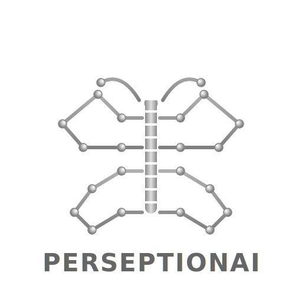

hi
PerceptionAI · Multi-View Attribute Recognition
PerceptionAI
Experiments with multi-view neural architectures for general object tracking and attribute recognition.
personal research log · CAM, S-ACRM, multi-view fusion

Dev Log · Multi-View Attribute Recognition
Recently I’ve been exploring how to stabilize attribute predictions when an object is partially occluded or seen from
awkward viewpoints. Instead of trusting a single frame, I feed a bag of views of the same object into a shared
CNN backbone, extract Class Activation Maps (CAM) and confidence scores, and then let a Self-Attentive
Cross-Relation Module (S-ACRM) decide which views carry the strongest evidence. Below is an animated sketch of the
architecture I’m experimenting with, inspired by the WACV paper “Let’s Observe Them Over Time”, but adapted to
general objects (drones, vessels, vehicles…) rather than only pedestrians.
Multi-View Attribute Recognition (CAM + S-ACRM)
Animated overview of the architecture – from inputs through backbone, CAM, S-ACRM, fusion and final prediction.
Stage 1 · Inputs
Stage 1 – Inputs:
multiple non-consecutive views of the same object are collected from different cameras or time steps.